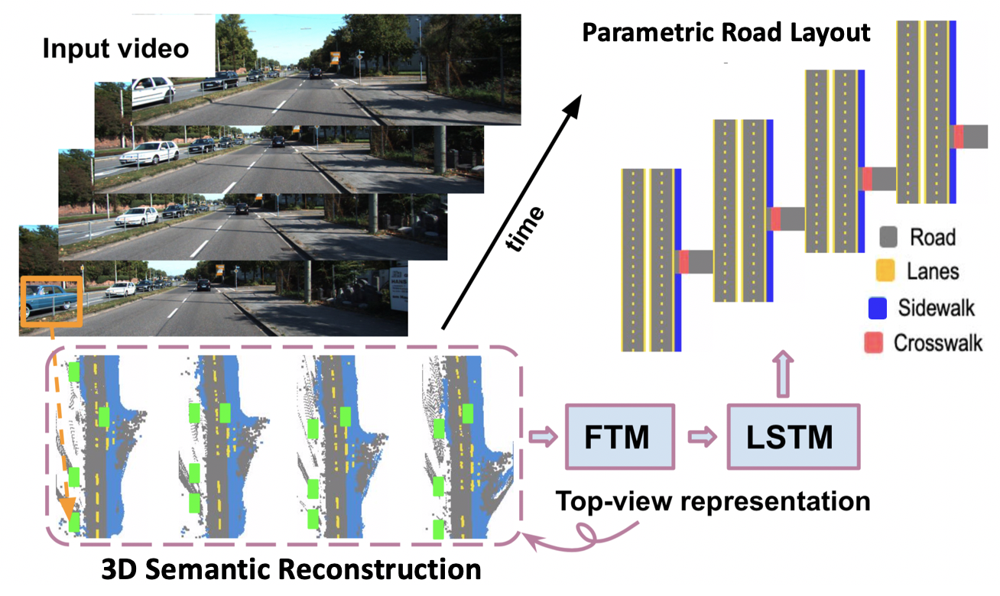
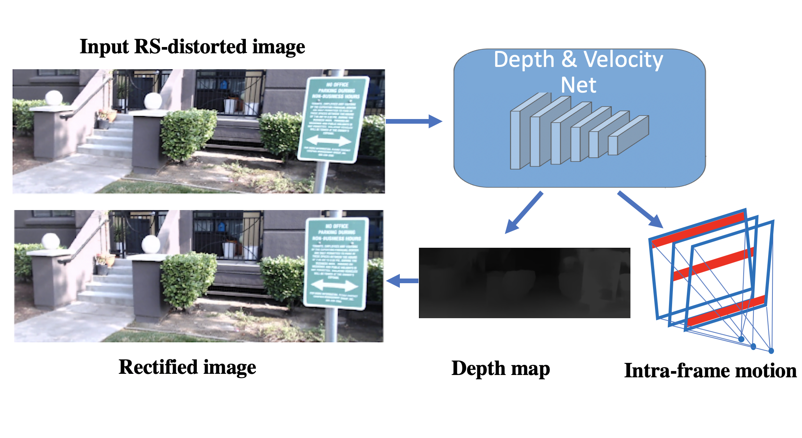
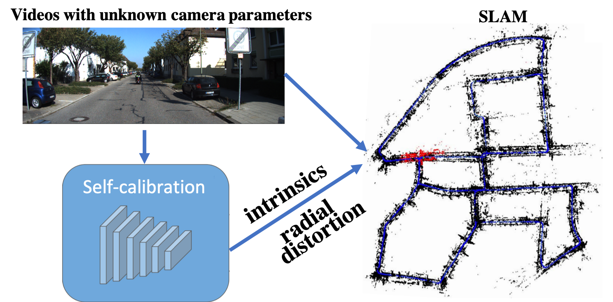
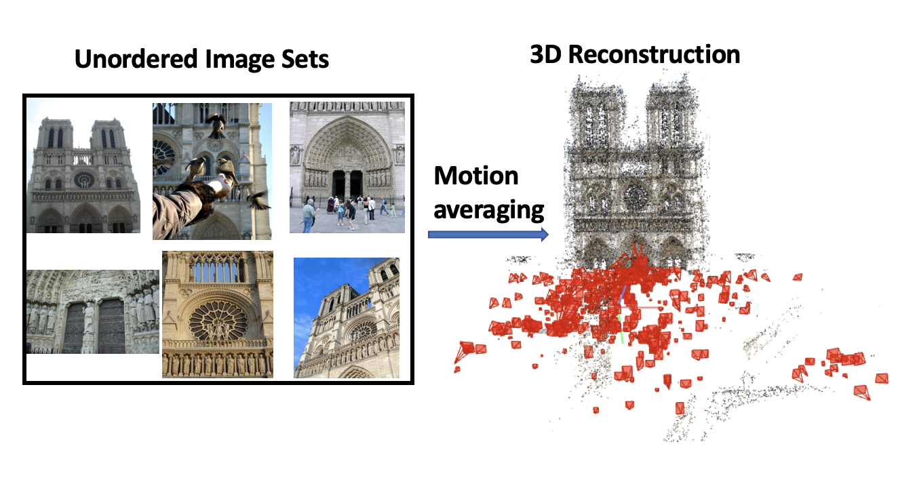

Bingbing Zhuang
I am currently a Postdoctoral Researcher at Media Analytics Department of NEC Laboratories America. I graduated from National Univeristy of Singapore with Ph.D. degree in 2019, advised by Prof. Loong Fah Cheong and co-advised by Prof. Gim Hee Lee. Before, I obtained my Bachelor's degree in the EEIS Department at University of Science and Technology of China (USTC) in 2015.
[CV] Email: bbzhuang92 [at] gmail [dot] com , bzhuang [at] nec-labs [dot] comResearch Interest
(1) 3D Computer Vision, including both low-level geometric problems (Structure-from-Motion, SLAM, 3D Reconstruction) and high-level 3D scene understanding. (2) Application of 3D Vision to Computational Photography.
Publications

|
Pseudo RGB-D for Self-Improving Monocular SLAM and Depth Prediction
Lokender Tiwari, Pan Ji, Quoc-Huy Tran, Bingbing Zhuang, Saket Anand, Manmohan Chandraker European Conference on Computer Vision (ECCV), 2020 [PDF] [Project Page] [1-min Video] |
|
Image Stitching and Rectification for Hand-Held Cameras
Bingbing Zhuang, Quoc-Huy Tran. European Conference on Computer Vision (ECCV), 2020 [PDF] [Project Page][1-min Video] |
|
|
 |
Understanding Road Layout from Videos as a Whole
Buyu Liu, Bingbing Zhuang, Samuel Schulter, Pan Ji, Manmohan Chandraker. IEEE Conference on Computer Vision and Patten Recognition (CVPR), 2020 [PDF] [Supplementary] |
|
 |
Learning Structure-and-Motion-Aware Rolling Shutter Correction [Oral Presentation]
Bingbing Zhuang, Quoc-Huy Tran, Pan Ji, Loong Fah Cheong, Manmohan Chandraker. IEEE Conference on Computer Vision and Patten Recognition (CVPR), 2019 [PDF][Project Page] |
|
 |
Degeneracy in Self-Calibration Revisited and a Deep Learning Solution for Uncalibrated SLAM [Oral Presentation]
Bingbing Zhuang, Quoc-Huy Tran, Gim Hee Lee, Loong Fah Cheong, Manmohan Chandraker. IEEE/RSJ International Conference on Intelligent Robots and Systems (IROS), 2019 [PDF][YouTube Video][Project Page] |
|
 |
Baseline Desensitizing In Translation Averaging
Bingbing Zhuang, Loong Fah Cheong, Gim Hee Lee IEEE Conference on Computer Vision and Patten Recognition (CVPR), 2018 [PDF][Supplementary][Code] |

|
Rolling-Shutter-Aware Differential SfM and Image Rectification
Bingbing Zhuang, Loong Fah Cheong, Gim Hee Lee IEEE International Conference on Computer Vision (ICCV), 2017 [PDF][Supplementary][Dataset] See C++ Code reimplemented by Felix Graule et al. as a 3D Vision Course Project in ETH Zurich |
Professional Services
Conference Reviewer: CVPR, ICCV, ECCV, NeurIPS, ICLR, IROS, 3DV, AAAI, WACV, ACCV, BMVC, ICPR, ACMMM
Journal Reviewer: IEEE Transactions on Image Processing, Robotica
Selected Awards
- ICCV 2019 Doctoral Consortium (Mentor: Pascal Fua)
- IROS 2019 Student Travel Award
- President's Graduate Fellowship, Singapore, 2015-2019
- Excellent Bachelor’s Thesis Award, USTC, 2015
Work Experience
- 2018: Research Intern at NEC Laboratories America, Cupertino
- 2018: Research Intern at Panasonic Image Processing and 3D Vision center, Singapore
- 2014: Research Intern at The University of Hong Kong
- 2014-2015: Research Assistant at University of Science and Technology of China
Teaching Assistant
- 2017 Fall: EE5731 Visual Computing, NUS
- 2016/2017/2018 Spring: EE4212 Computer Vision, NUS
- 2016 Fall: CG3207 Computer Architecture, NUS
- 2014 Fall: Programming in C language, USTC